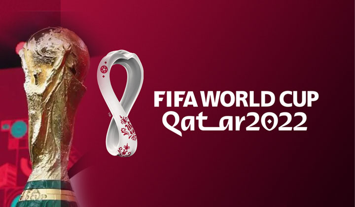

The 2022 FIFA World Cup was an international football tournament contested by the men's national teams of FIFA's member associations and 22nd edition of the FIFA World Cup. It took place in from 20 November to 18 December 2022, making it the first World Cup held in the Arab world and Muslim world, and the second held entirely in Asia after the 2002 tournament in South Korea and Japan.France were the defending champions, having defeated Croatia 4–2 in the 2018 final. At an estimated cost of over $220 billion, it is the most expensive World Cup ever held to date; this figure is disputed by Qatari officials, including organising CEO Nasser Al Khater, who said the true cost was $8 billion, and other figures related to overall infrastructure development since the World Cup was awarded to Qatar in 2010.
Argentina were the champions after winning the final against the title holder France 4–2 on penalties following a 3–3 draw after extra time. French player Kylian Mbappé became the first player to score a hat-trick in a World Cup final since Geoff Hurst in the 1966 final and won the Golden Boot as he scored the most goals (eight) during the tournament. Argentine captain Lionel Messi was voted the tournament's best player, winning the Golden Ball. Emiliano Martínez and Enzo Fernández, also from Argentina, won the Golden Glove, awarded to the tournament's best goalkeeper and the Young Player Award, awarded to the tournament's best young player, respectively.
There are last five World Cup winners